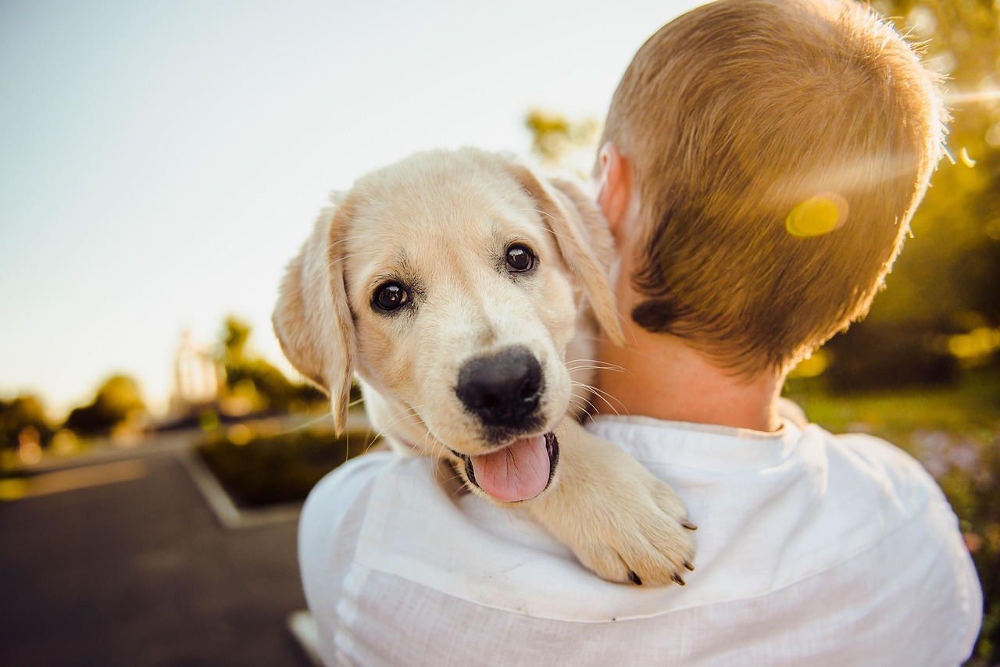

At Wagon Tails Rescue, based in the heart of Eau Claire, Wisconsin, we’re dedicated to giving animals a second chance at life. Our mission is to rescue, rehabilitate, and rehome pets in need, connecting them with loving families who are ready to provide forever homes.

Whether they come to us from shelters, the streets, or surrender situations, every dog and cat in our care receives compassion, medical attention, and plenty of love. We believe every tail deserves a happy ending—and we're here to make that happen, one wag at a time.
